Landings de paid: antes y después
Qué fallaba en cada landing que hoy reciben las campañas de Google, qué cambia en la versión nueva y en qué estado está. Actualizado el 28/10 con las prioridades de Carlos (27/10) y la respuesta de Snowball sobre el A/B.
Qué ha cambiado desde el lunes
Decisiones
- Expansión de URL parada en todas las PMax (Carlos, 27/10; lo ejecuta Snowball). El tráfico va a las URL finales de cada campaña.
- Primero alquiler vacacional en España e Italia: el presupuesto se rebalancea 14 días hacia rental. Nuevo orden: ES resto → IT resto → IT hoteles → ES hoteles.
- El A/B se hace en HubSpot, no en Google (Snowball, 28/10). Cada landing nueva se monta como variante B de la página actual, con la misma URL y reparto 50/50: no hay que tocar Google Ads para el test.
- Formulario de 5 campos, como el traspaso: nombre, teléfono, email, tipo de alojamiento y nº de habitaciones. Los formularios actuales de HubSpot ya los piden, así que se reutilizan. En la guía se quita «empresa».
- Optimizar con SQL de todos los canales, no con formularios.
Hecho en los bocetos
- Logos de los PMS en las 5 landings de rental (Guesty, Hostaway, Lodgify, Avantio, Smoobu y Hostify), por sugerencia de Valery: se reconocen antes que el nombre.
- Guest app con capturas reales de la app (Valery): enlace con tareas, escaneo del documento, selfie, firma y acceso.
- Páginas de gracias con descarga: guía SES, pack legal (5 documentos) y contratto IT. Los 6 archivos ya están en HubSpot y responden; el botón de prueba lleva al registro de chekin.com, como hoy.
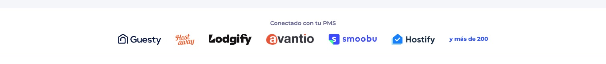
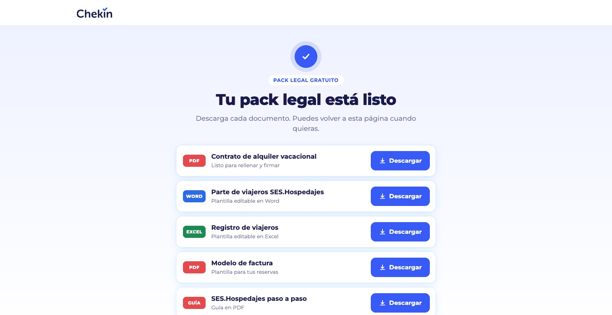
Con la expansión parada, la guía, la guest app y el pack dejan de recibir tráfico de la PMax Competitors, porque llegaban ahí por la expansión. Solo seguirán recibiéndolo si se ponen como URL final de un grupo de recursos. [POR COMPROBAR con Snowball qué URL finales quedan en cada campaña.] SES Hospedajes no cambia: ya es la URL final de la PMax Vacational (99% de sus clics).
Comprobar que el plan de HubSpot permite A/B de landing pages · reconectar el conector de HubSpot con permisos de landing pages · texto legal (DPO) · revisión nativa del italiano · email con los enlaces de descarga · montaje como variante B en borrador y prueba con un contacto «PRUEBA». HubSpot, al final.
| Landing | Campaña | Antes | Después | Estado |
|---|---|---|---|---|
| SES Hospedajes | PMax Vacational ES | /check-in-online-ses-hospedajes | Boceto v2 | 1.º · A/B en HubSpot |
| Guía SES | PMax Competitors ES | /es/guia/seshospedajes | Boceto v2 · Gracias | Según tráfico sin expansión |
| Guest app | PMax Competitors ES | /check-in-guestapp | Boceto v2 | Según tráfico sin expansión |
| Pack legal (une 5 páginas) | PMax Competitors ES | Guía + 4 plantillas | Boceto v1 · Gracias | Según tráfico sin expansión |
| Italia resto (affitti brevi) | PMax Vacational IT | /modello/contrattoaffittoturistico | Boceto · Grazie | Lista el 4/11 |
| Italia hoteles (questura) | PMax Competitors IT | /it/ads/registrazione-ospiti-questura | Boceto v4 | Lista el 5/11 |
| Hoteles España | PMax Competitors ES | /chekin-hoteles | Boceto v6 | Último (orden nuevo) |
| Una landing por anuncio | PMax hoteles (fase 2) | No existían | 4 bocetos | Propuesta |
Hoteles España: /chekin-hoteles
De 1.559 clics que llegaron en 90 días salieron 6 formularios: 0,38%. Las plantillas y la guía SES de la misma campaña convierten entre el 2,9% y el 5,0%.
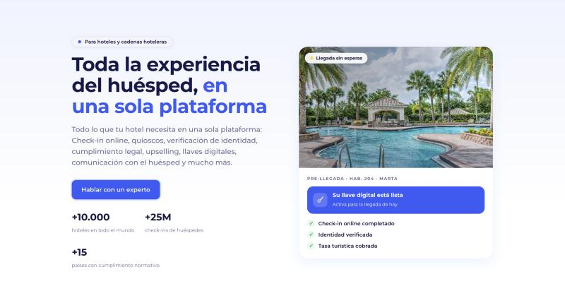
Portátil de 14" (1512×780), capturada el 23/10. No hay formulario a la vista.
Qué fallaba
- El formulario está al final: a unos 6.900 px, en una página de 7.000–7.400 px. Quien no baja hasta el final no ve dónde dejar sus datos.
- Tres objetivos a la vez: hablar con un experto, la calculadora y la guía gratuita. No hay una acción clara.
- 9 enlaces que sacan de la página (medido el 23/10).
- El titular no repite el anuncio: los anuncios dicen "Automatiza tu recepción" o "Check-in en 3 minutos"; la página, "Toda la experiencia del huésped".
- Lenta: 3,9 s y 716 KB (21/10). Idioma declarado inglés en una página en español.
- "+15 países": cifra antigua (la oficial es +20).
Qué cambia
| Actual | Nueva | |
|---|---|---|
| Formulario | ≈6.900 px | 185 px |
| Alto de la página | 7.374 px | 4.362 px |
| Enlaces de salida | 9–14 | 3 |
| Objetivos | 3 | 1 |
| Idioma declarado | en | es |
| Oferta | Hablar con un experto | Prueba gratis 14 días |
Google solo manda a esta página el 41% de los clics de la campaña (90 días), y el 21% en los últimos 30. El resto va a plantillas y guías por la expansión de URL. Con ~190 clics al mes el test no termina en plazo. 27/10: Carlos para la expansión de URL, así que el tráfico de la campaña irá a esta página. Queda la última en el orden nuevo (rental primero).
SES Hospedajes: /check-in-online-ses-hospedajes
La página que más formularios trae: 14.622 clics y 535 formularios (3,7%) en 90 días. Leads baratos de alquiler vacacional: 500 MQL, 8 SQL, 0 ganados.
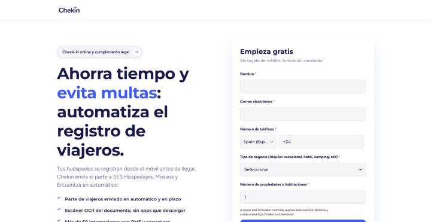
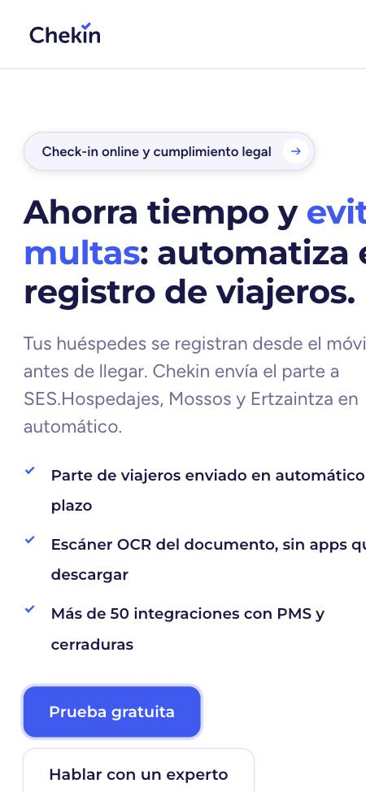
Móvil (375×812): el titular sale cortado y el formulario empieza a 961 px, fuera de la primera pantalla.
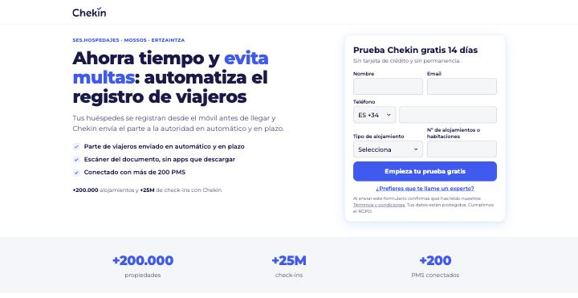
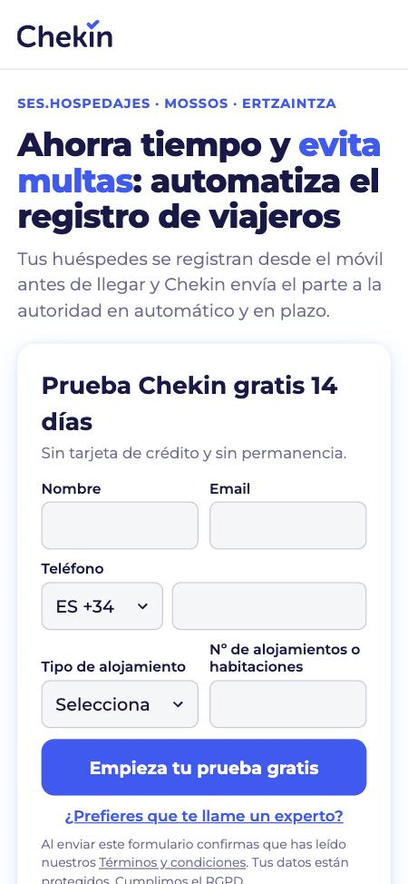
Móvil: titular entero y el botón de enviar a 731 px, sin bajar.
Qué fallaba
- Móvil: el titular sale cortado por la derecha. Es lo primero que ve el usuario.
- Móvil: el formulario empieza a 961 px y el botón termina a 1.559 px.
- Portátil: el botón de enviar queda cortado, a ~824 px con una pantalla de 780.
- Dos botones iguales que llevan al mismo sitio ("Prueba gratuita" y "Hablar con un experto"), repetidos 4 veces; 11 botones en total.
- Página larguísima: 7.669 px en portátil y 13.963 px en móvil.
- Cifra no oficial: "+50 integraciones" (la oficial es +200 PMS). Campos a 15 px: iOS hace zoom al tocarlos.
Qué cambia
| Actual | v2 | |
|---|---|---|
| Botón de enviar (portátil) | ≈824 px | 474 px |
| Formulario (móvil) | 961 px | 316 px |
| Alto (portátil / móvil) | 7.669 / 13.963 | 2.520 / 4.085 |
| Botones | 11 | 1 principal + enlace "que me llame un experto" |
| Letra de los campos (móvil) | 15 px | 16 px |
| Cifras | +50 integraciones | Solo oficiales |
Propuesta: test actual frente a v2 en la PMax Vacational, que ya manda aquí el 99% del tráfico. Hay volumen para terminarlo rápido. Durante el test, excluir las otras URL de la campaña, para que Google no mueva el tráfico si cambia la conversión. Antes de lanzar falta el OK del DPO al texto legal y conectar el formulario de HubSpot.
Guía SES: /es/guia/seshospedajes
236 clics y 8 formularios (3,4%) en 90 días.
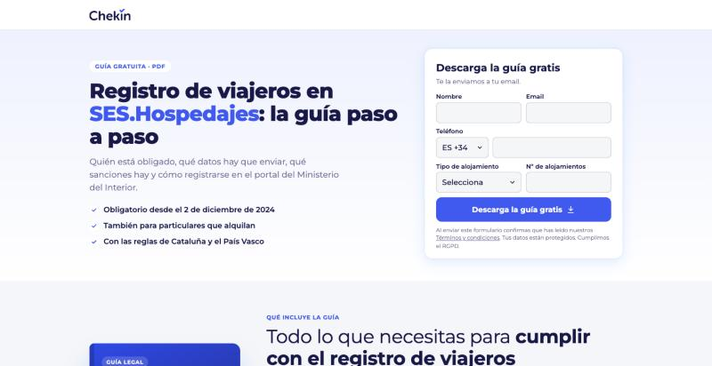
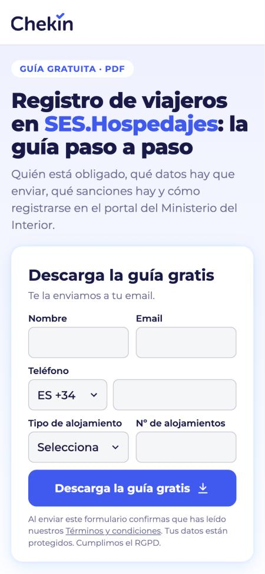
Móvil: el botón de descarga queda a 717 px, sin bajar.
Qué fallaba
- El formulario está al final (1.823 px en portátil, 2.337 en móvil) y tiene 7 campos para descargar una guía.
- Errata: "El registro de viajeros en un proceso obligatorio".
- Texto de 2024: "obligatoria desde el pasado 2 de diciembre de 2024".
- Enlaces de salida con UTM de otra campaña y a un formulario externo.
- Fuera del design system: otra tipografía, sin logo arriba, idioma sin declarar.
Qué cambia
| Actual | v2 | |
|---|---|---|
| Botón de descarga (portátil) | ≈1.823 px | 472 px |
| Botón de descarga (móvil) | ≈2.337 px | 717 px |
| Campos del formulario | 7 | 5 (con teléfono) |
| Alto de la página (portátil) | — | 1.637 px |
| Enlaces de salida | Sí, con UTM de otra campaña | Solo legales |
| Contenido de la guía | Lista en el hero | Paso 2, con la portada |
Página corta: titular y formulario de 5 campos arriba (nombre, email, teléfono, tipo de alojamiento y nº de alojamientos); la portada y los 12 temas de la guía, en el segundo bloque. La portada es una maqueta: falta la imagen real de la guía. Ojo: la guía recibe tráfico de la PMax Competitors, así que no debería lanzarse a la vez que otro cambio en esa campaña (una sola variable).
Guest app: /check-in-guestapp
La página donde más gasta la campaña: 377 clics, 2.009 € y 10 formularios (2,7%) en 90 días, más que /chekin-hoteles (1.916 €). Es una página de producto, no de contenido: la que más encaja con hoteles después de la landing principal.
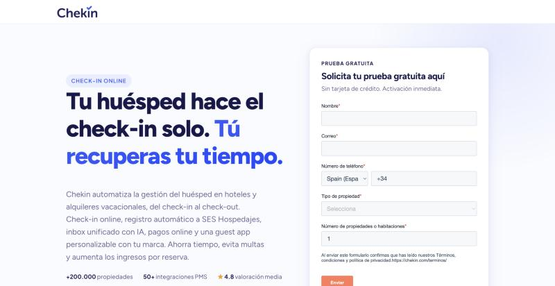
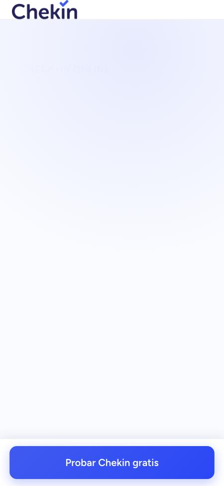
Móvil, 6 s después de cargar: el titular sigue invisible (opacidad 0, espera una animación). [Por comprobar en un móvil real.]
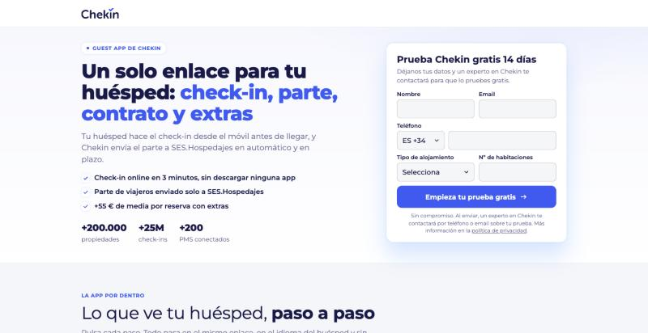
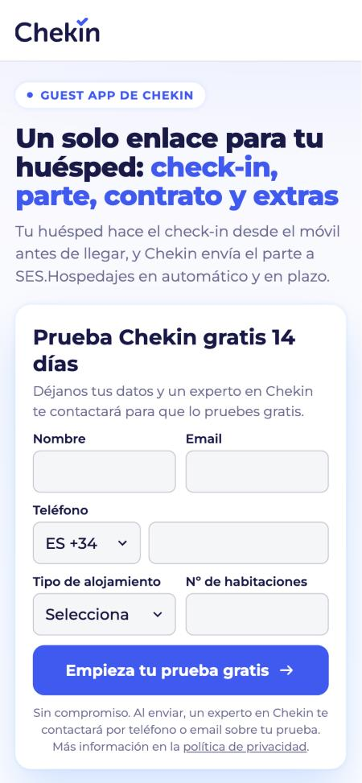
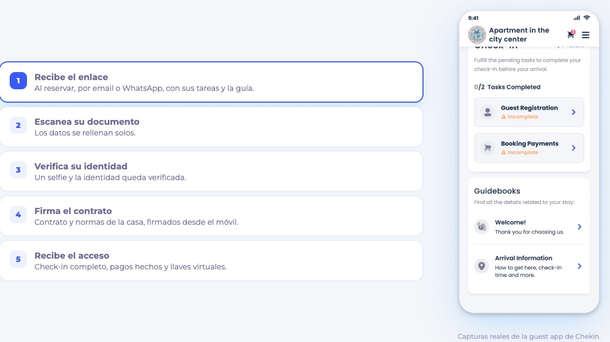
Todo visible al cargar. Botón a 487 px en portátil y 721 px en móvil. A la derecha, la app por dentro con capturas reales (28/10): cada paso cambia la captura.
Qué fallaba
- Móvil: la página aparece en blanco. El titular sigue con opacidad 0 a los 6 s; solo se ve el botón fijo "Probar Chekin gratis". En portátil aparece tras 1–2 s.
- Portátil: el botón "Enviar" queda cortado en el borde de la pantalla, y es naranja (fuera del design system).
- Cifras no oficiales: "50+ integraciones PMS" (la oficial es +200), "★ 4.8 valoración media", "hasta 1 hora por reserva" y "cero riesgo de multas".
- Oferta distinta: "Activación inmediata", cuando el resto de landings promete que un experto en Chekin contacta.
- Página larguísima: 7.116 px en portátil y 11.076 px en móvil. Idioma declarado inglés.
- Testimonios (Greystar, R2R, Hostmacher) sin comprobar que estén publicados en chekin.com.
Qué cambia
| Actual | v2 | |
|---|---|---|
| Titular en móvil | Invisible al cargar | Visible al cargar |
| Botón (portátil) | Cortado en el borde | 487 px |
| Botón (móvil) | Fuera de la pantalla | 721 px |
| Alto (portátil / móvil) | 7.116 / 11.076 | 3.403 / 4.862 |
| Cifras | 50+ PMS, 4.8★ | Solo oficiales |
| Oferta | Activación inmediata | Prueba 14 días + experto |
| Titular | Check-in genérico | Guest app, como el anuncio |
El anuncio que trae este tráfico lo generó Google con el título de la página ("Guestapp Chekin": 408 clics en 90 días). Por eso el titular nuevo habla de la guest app, y debajo un bloque interactivo enseña lo que ve el huésped en cinco pasos. Capturas reales puestas el 28/10 (enlace, documento, selfie, firma y acceso). Falta el caso de éxito oficial y saber si sigue recibiendo tráfico sin la expansión de URL.
Pack legal: la guía y las 4 plantillas, en una sola página
Hoy son cinco páginas sueltas. Juntas se llevaron 1.357 clics, 51 formularios (3,8%) y 4.704 € en 90 días: el 45% del gasto de la campaña.
| Página que se une al pack | Clics | Formularios | Conversión | Gasto |
|---|---|---|---|---|
| Contrato de alquiler vacacional (PDF) | 481 | 14 | 2,9% | 1.557 € |
| Plantilla SES Hospedajes (Word) | 374 | 17 | 4,5% | 1.687 € |
| Guía SES | 202 | 7 | 3,5% | 626 € |
| Plantillas SES (Word y Excel) | 180 | 7 | 3,9% | 532 € |
| Modelo de factura | 120 | 6 | 5,0% | 302 € |
| Total | 1.357 | 51 | 3,8% | 4.704 € |
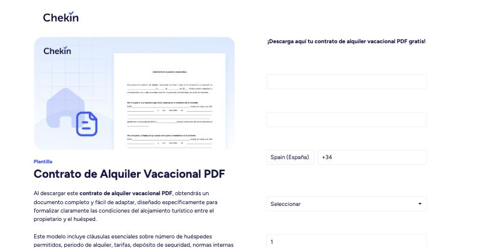
Portátil: el formulario está arriba, pero el botón "Descargar ahora!" queda a 939 px, por debajo de la pantalla. Página en inglés para el navegador y 6 enlaces de salida. Medido el 23/10.
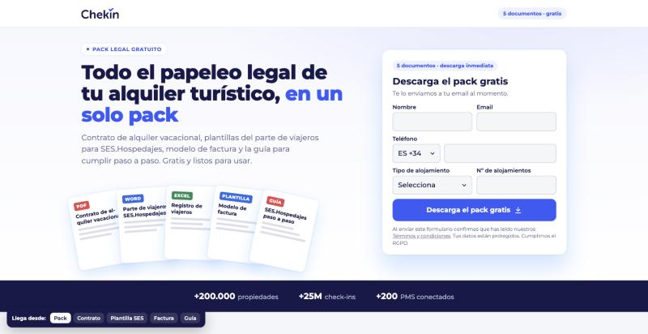
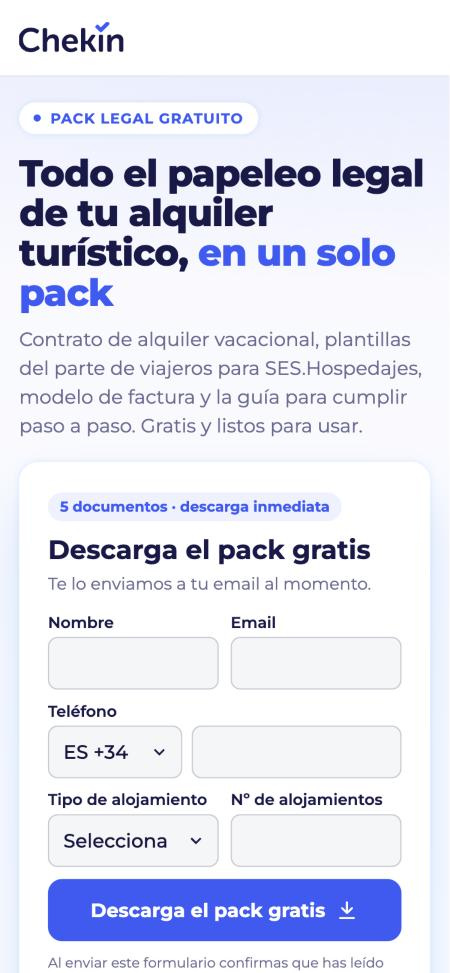
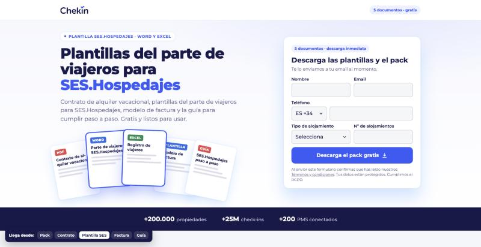
Botón a 516 px en portátil y 786 px en móvil. A la derecha: la misma página cuando el clic viene del anuncio "Plantilla SES Hospedajes".
Por qué así: los datos
- El formulario arriba ya funciona. Las plantillas, con el formulario al lado del titular, convierten entre el 2,9% y el 5,0%; /chekin-hoteles, con el formulario al final, el 0,38%. Se mantiene y se lleva el botón dentro de la primera pantalla (939 px → 516 px).
- El titular repite lo que buscaba. Google ya hace anuncios con el título de cada documento: "Plantilla SES Hospedajes" se llevó 1.066 clics y 4.636 €. Cada URL antigua puede mandar al pack con su documento (
?recurso=parte,contrato,factura,guia): el titular cambia y ese documento sale destacado. - Una página que se puede medir. Hoy son cinco páginas de 120 a 481 clics en 90 días, y ninguna llega sola a la muestra de un test. Juntas suman 1.357.
- Saber qué atrae a quién. Un campo oculto guarda el documento de origen, y el tipo de alojamiento y el nº separan hoteles de alquiler vacacional para Ventas.
Por qué así: producto parecido
- Kits de recursos de software B2B, como los de plantillas de HubSpot: un solo formulario da acceso a varios documentos y la página enseña qué hay dentro (formato y contenido) antes de pedir los datos.
- Más valor por el mismo formulario. Quien buscaba un contrato se lleva también el parte, la factura y la guía.
- El paso a Chekin, al final. Un bloque compara las plantillas con hacerlo en Chekin: firma del contrato en el check-in online y parte enviado solo a SES.Hospedajes.
Ojo con la calidad: este tráfico es sobre todo alquiler vacacional (plantillas: 2 SQL y 0 oportunidades desde el 21/07). El pack sube los formularios, no las ventas de hoteles. 27/10: Carlos para la expansión de URL, así que estas páginas dejan de recibir tráfico de paid salvo que alguna quede como URL final. Hecho el 28/10: página de gracias con los 5 archivos (ya en HubSpot). Falta: el envío por email y, si se usa, las redirecciones de las URL antiguas con su ?recurso=.
Italia y páginas de gracias
Las 3 páginas de Italia se llevan el 94% de los 8.946 clics de las 4 campañas IT en 90 días (21 jul – 18 oct): questura (5.383), contrato de alquiler (2.514) y alloggiati (548). Detalle en el brief Landings de paid Italia.
Contratto affitti brevi
Sustituye a /modello/contrattoaffittoturistico (2.514 clics). Los 3 portales, «senza carta e senza impegno» y prueba social bajo el botón.
Abrir ↗Hotel Italia · Questura
Sustituye a /it/ads/registrazione-ospiti-questura (5.383 clics). Con «parla con un esperto».
Abrir ↗Descarga tras el formulario
Feedback de Valery: quien pide un documento lo recibe al momento. En el visor de Claude los botones no descargan; en HubSpot sí.
Guía SES ↗Pack legal ↗Contratto IT ↗Pasar el formulario a conversión principal en las PMax IT antes del test (borrador para Snowball listo, sin enviar). Hoy Google Ads cuenta 0 conversiones en la landing de la PMax IT Competitors aunque en HubSpot entran contactos.
Una landing por anuncio
No sustituyen a ninguna página: son nuevas. Cada una repite la promesa de su anuncio en el titular y enseña primero esa función. Irían cada una con su grupo de recursos en la PMax, nunca a la vez que el test de la fase 1.
Olvídate del portal del Ministerio
Anuncio: imagen "Reportado" (SES). Calculadora de horas de parte.
Abrir ↗Misma ocupación, +55 € por reserva
Anuncio: imagen "+55 € por reserva". Calculadora de ingresos.
Abrir ↗Tu recepción también responde a las 3 de la mañana
Anuncio con el mismo texto. Chat de madrugada.
Abrir ↗Recupera horas en recepción
Anuncio de Meta y titulares de Google "Automatiza tu Recepción". Simulador de la cola.
Abrir ↗Igual en todas las versiones nuevas: oferta "Prueba Chekin gratis 14 días" (un experto en Chekin contacta), formulario de 5 campos, un solo botón "Empieza tu prueba gratis", solo cifras oficiales y casos publicados en chekin.com.
Sobre los datos: los clics y formularios por URL salen del informe de URLs de Google Ads cruzado con HubSpot (biblioteca de anuncios). Las medidas de página son de una revisión en navegador a 1512×780 y 375×812 (21–23/10).
Enlaces: algunos bocetos y las páginas de gracias son privados; para que otros los abran hay que compartirlos desde el menú Compartir de cada uno. Nada está en HubSpot: las landings actuales siguen funcionando igual.